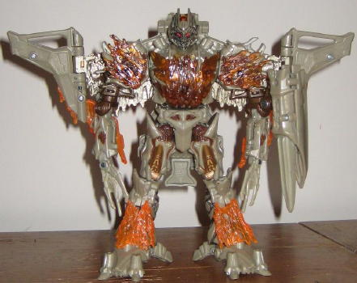

Megatron
[Voyager] (Movie)
Megatron
[Voyager] (Movie)
Megatron's futuristic
jet mode is similar in design to his
Leader
class toy
, but with a very important difference-- Voyager Megatron
has transparent blue "ice" bits all over him, like he's just broken out
of his Hoover Dam prison. It's quite an interesting idea, and helps to
differentiate him more from his Leader class toy than just being a different
size. The ice pieces also help to give a bit more color to an otherwise
pretty dull color scheme of gray and black with a little bit of bronze.
The mold detailing on the ice pieces-- and the rest of the toy-- is EXTREMELY
well-done, with practically every square centimeter of Megatron covered
in either icy frozen detailing or sharp-looking "metal plating" detailing.
His paint apps are also fairly well-done, with silver fade paint apps on
the ice to give it a bit of a realistic "shiny" feel, and the few bronze
paint apps really standing out well against their surrounding colors. Megatron
also has a really cool gimmick that can be activated in this mode-- if
you straighten out the ends of his wings, fold out the icy pieces on the
ends of said wings, and then push back and forth on a lever at the back
end of his vehicle mode, his wings sweep forwards and backwards like giant
claws-- it looks REALLY cool. Megatron also has another, minor gimmick--
if you push in on the lower half of his middle nosecone, the plastic spring-loaded
missile inside of it will fire. Unfortunately, there's one major downside
to this mode-- it's a piece of crud. It looks almost nothing like
a convincing jet, futuristic or otherwise. The robot arms are VERY obvious
on the sides of the nosecone, the robot head just sticks out from the front
of the body with the chest-ice panel doing a very poor job of covering
it up, the wings are way too short proportionally, there's a HUGE gap in
between the top and bottom halves of the rear two-thirds of this mode,
and it's incredibly obvious where the robot legs and waist are in this
mode from any angle. There's very little about the actual design of the
mode that appeals to me at all-- it just seems like Hasbro just can't get
a good jet mode out of this Megatron design.
Megatron's robot mode
is much, MUCH better, just like on the Leader class toy, and is really
what makes the toy. The proportions are pretty much spot-on perfect, and
he definitely does look like the King of Evil, with his extremely well-detailed
EVIL face and EVIL hands and EVIL jagged bits of "metal" molded everywhere.
The ice bits on his chest, wings, shoulders, and lower legs, combined with
the transparent light blue light piping used for his eyes, make him look
like some kind of ice demon. The wings, being that they're smaller than
they should be proportionally in vehicle mode, aren't overly large in this
mode and tend to accentuate the mode rather than detract from it. The arm-cannon
made out of the middle nosecone also looks pretty cool, as well. In addition,
Megatron has excellent articluation-- he can move at the head, shoulders
(at three points), elbows, at the base of his finger-claws on each hand
(one claw can move by itself, the others move as one whole piece), the
waist, the hips (at two points), the knees (at two points), and the ankles.
Unfortunately, in one of the weirdest design decisions I've ever seen Hasbro
make, Megatron's toes automatically snap together whenever he's not standing
on something, and THERE'S NO WAY TO KEEP THEM FROM DOING THIS. So as soon
as you lift off of a table, his feet snap together-- needless to say, it's
very annoying, especially since there's nothing about the transformation
that requires this. Indeed, because of the springs involved, it's actually
MORE expensive for Hasbro to include this annoyance than simply leave the
toes with normal, manual movement.
Voyager-class Megatron
has an excellent robot mode, and his transparent "icy" pieces are a nice
idea to help differentiate him from Leader-class Megatron, but his vehicle
mode is so incredibly poor I can't recommend him to anyone but the most
die-hard Movie Megatron fans or completists. And even then, you may want
to consider getting the Best Buy Exclusive
"Premium
Edition"
of this mold instead, even if it costs you a little more,
as its paint job makes it look MUCH better than this wide-released version.
Megatron (Battle Over Mission City) Bio:
Megatron perches on the rooftop of one
Mission City's downtown skyscrapers, his rage giving him even greater strength
than normal. In the grip of his clawed hands, Autobot Jazz struggles, slicing
at the Decepticon leader's invulnerable armor with his secondary weapons.
Thought the Autobot warrior fights valiantly, he is also hundreds of feet
away from any source of help, well out of the range of his comrades' weapons.
The results of a one-on-one confrontation with Megatron are all too inevitable.
Even as he battles to stay alive, Autobot Jazz knows there is only one
way this can end.
Strength: 10.0
Intelligence: 10.0
Speed: 10.0
Endurance: 10.0
Rank: 10.0
Courage: 9.0
Fireblast: 10.0
Skill: 9.0
Review by Beastbot

*(NOTE: In addition to the normal release, as can be seen above, Voyager
class Megatron was also repainted in a flame-colored paint job for the
Target Exclusive "Battle Over Mission City" 2-pack, who was packed along
with
Final Battle Jazz
. I like the flame job
a bit better than the icy job, as I think the color scheme is a bit more
visually interesting and a bit different from all the other ice-themed
decoes of the various movie Megatron molds.
Picture courtesy of Obvious
Prime
.)